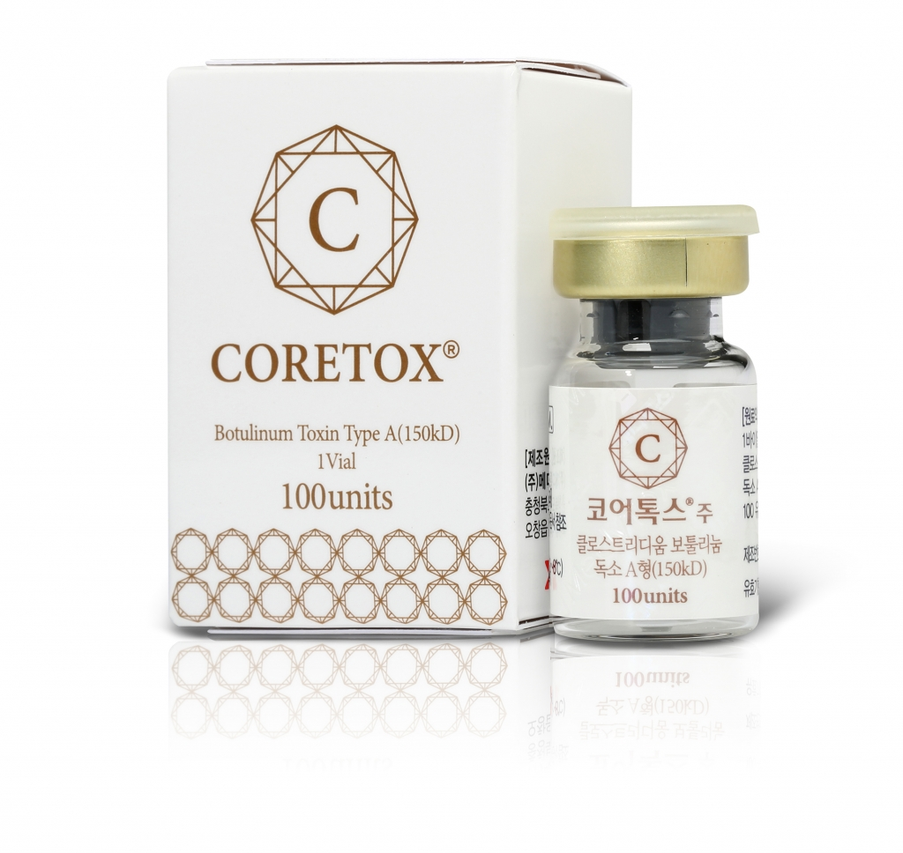
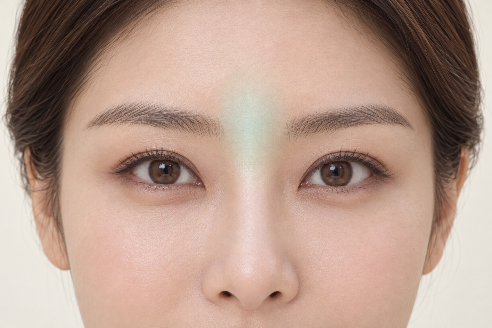
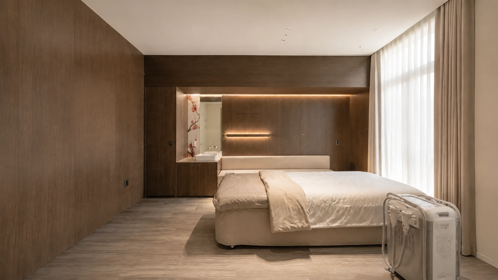

150kDa
보툴리눔독소 A형
공식 제품 정보에 표시된 유효성분의 분자량입니다. 시술 용량이나 유지 기간을 나타내는 숫자는 아닙니다.

Meet Coretox.
코어톡스는 메디톡스의
보툴리눔독소 A형 제제입니다.
신경에서 근육으로 전달되는 신호에 작용해 근육의 수축을 일시적으로 줄이는 데 사용합니다. 제품의 특성과 함께 표정, 근육의 움직임, 이전 시술 이력을 살펴 시술을 상담합니다.
작용 원리 자세히 보기The details.
공식 제품 정보에 표시된 유효성분의 분자량입니다. 시술 용량이나 유지 기간을 나타내는 숫자는 아닙니다.
첨가제로 L-메티오닌, 폴리소르베이트20, 백당, 염화나트륨이 안내되어 있습니다. 성분 관련 이력은 상담 시 알려주세요.

국내 공개 제품 정보의 허가 범위는 만 20~65세 성인의 근육 활동과 관련된 중등증 내지 중증 미간주름입니다.
A softer movement.
피부에 볼륨을 더하는 필러와는 다른 원리입니다.
보툴리눔 톡신은 신경근 접합부에서 신호 전달에 작용합니다.
 신경 말단근육 섬유작용 원리의 이해를 돕는 개념도
신경 말단근육 섬유작용 원리의 이해를 돕는 개념도신경 말단에서 분비되는 아세틸콜린은 근육이 수축하도록 신호를 전달합니다. 웃거나 찡그리는 표정에도 이 과정이 관여합니다.
보툴리눔 톡신은 신경 말단에서 아세틸콜린의 분비를 억제해 신경에서 근육으로 전달되는 신호를 일시적으로 줄입니다.
시술한 근육의 수축이 줄면서 근육 움직임과 관련된 주름의 변화를 살펴볼 수 있습니다. 반응과 경과는 개인에 따라 다릅니다.

Your expression.
표정을 지을 때의 움직임과 편안히 있을 때의 상태를 함께 살펴봅니다.
코어톡스의 국내 공개 허가 정보는 미간주름에 관한 것입니다. 미간 이외 부위는 진료에서 적용 여부와 방법을 확인합니다.
Made for your expression.
제품명과 시술 시기, 이전에 느꼈던 변화와 불편함을 확인합니다.
관심 있는 부위의 움직임, 근육의 발달 정도, 좌우 차이를 살펴봅니다.
적용 부위와 방법을 설명하고, 시술 후 관리와 경과 확인 시점을 안내합니다.
After your visit.
시술 부위를 세게 누르거나 문지르지 않고, 안내받은 관리 방법을 따릅니다. 변화가 나타나는 시점과 유지 기간에는 개인차가 있습니다.
일시적인 붉어짐·부기·멍·불편감이 생길 수 있습니다. 증상이 지속되거나 예상과 다른 변화가 있으면 병원에 문의하세요. 호흡이나 삼킴에 이상이 생기면 즉시 진료를 받으세요.
시술 후 문의하기Questions,
answered.
메디톡스의 보툴리눔독소 A형 제제입니다. 신경에서 근육으로 전달되는 신호에 작용하며, 국내 제품 정보에는 성인의 중등증 내지 중증 미간주름의 일시적 개선이 안내되어 있습니다.
제품 정보에 표시된 보툴리눔독소 A형의 분자량입니다. 용량이나 지속 기간을 뜻하는 수치가 아니며, 이 숫자만으로 개인의 시술 결과를 예측하지 않습니다.
제품의 성분과 특성, 이전 시술 이력과 반응, 현재의 근육 움직임을 함께 살핍니다. 서로 다른 제품의 단위를 같은 기준으로 환산하거나 용량만으로 비교하지 않습니다.
반복 시술에서는 제품 선택뿐 아니라 시술 간격과 누적 이력 등을 함께 고려합니다. 최근 받은 제품과 시술 날짜를 알려주시면 상담에 도움이 됩니다. 특정 제품이 내성을 완전히 없애 준다고 단정할 수는 없습니다.
상담에서 표정 근육과 저작근 등 부위별 상태를 살펴볼 수 있습니다. 코어톡스의 공개된 국내 허가 정보는 미간주름에 관한 것으로, 다른 부위의 적용 여부와 방법은 진료에서 개별적으로 판단합니다.
변화가 나타나는 시점과 유지 기간은 부위, 용량, 근육 상태와 개인 반응에 따라 달라집니다. 진료 때 안내받은 시점에 경과를 확인하고, 다음 시술 간격을 함께 정합니다.
시술 부위를 세게 누르거나 문지르는 행동은 피하고 병원에서 안내한 관리 방법을 따라주세요. 일시적인 붉어짐·부기·멍이 나타날 수 있으며, 증상이 지속되거나 예상과 다른 변화가 있으면 병원에 문의하세요.
뷰티블라썸의원 카카오톡 또는 전화로 상담할 수 있습니다. 합정역 3번 출구 앞에 있으며, 관심 있는 부위와 이전 보툴리눔 톡신 시술 이력을 함께 알려주세요.

Find your balance.
홍대·합정 뷰티블라썸의원
관심 부위와 이전 시술 이력을 함께 알려주세요.
메디톡스 코어톡스 공식 제품 정보 · 성분, 분자량, 국내 허가 범위
식약처 의약품안전나라 코어톡스주 · 최신 허가 정보
MedlinePlus 보툴리눔 톡신 의약품 정보 · 일반 작용 원리. 해외 특정 제품의 허가 범위를 코어톡스에 동일하게 적용하지 않습니다.